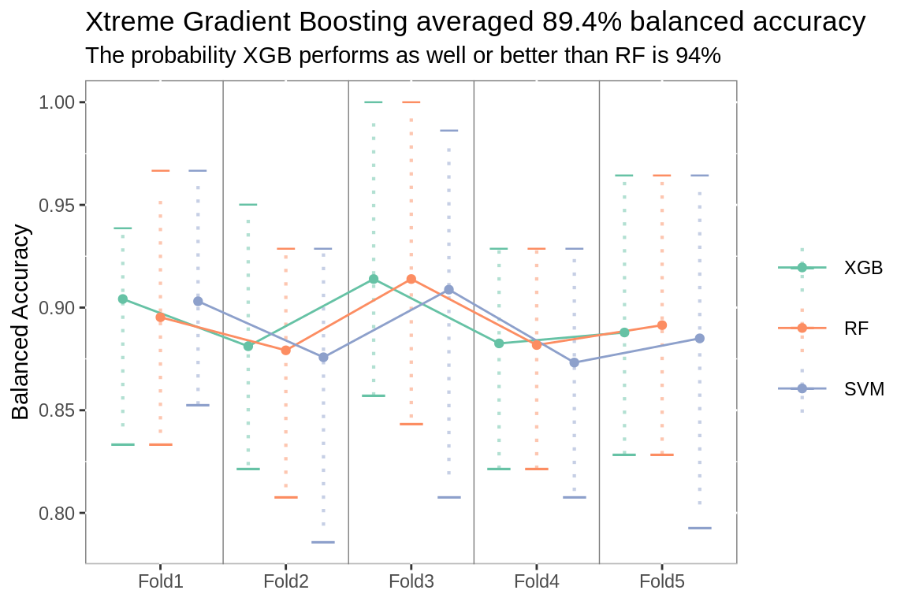
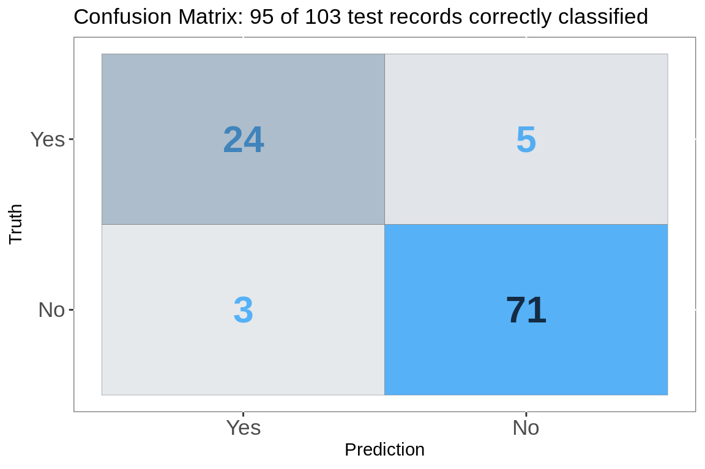
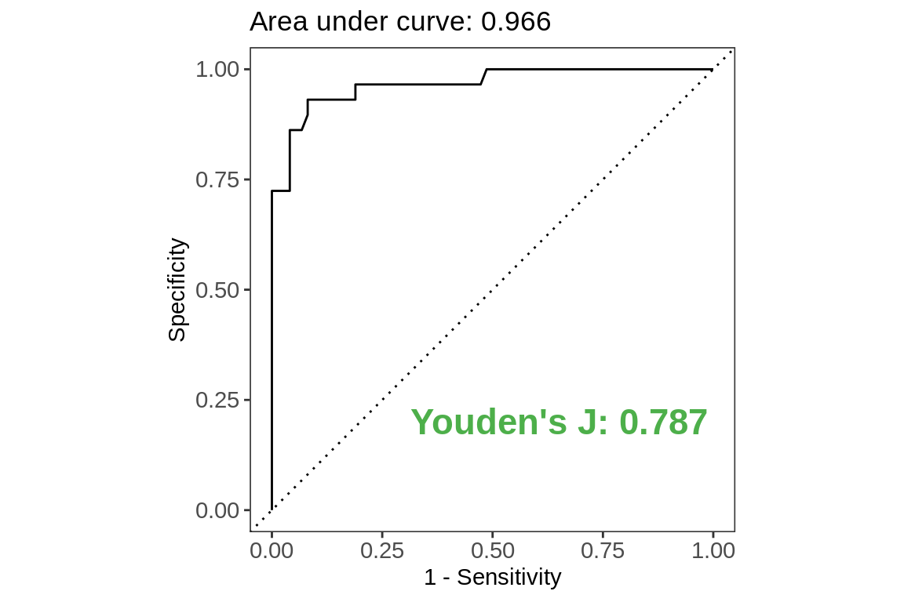
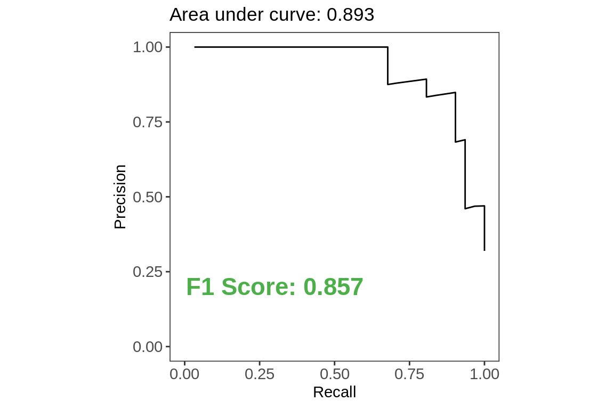
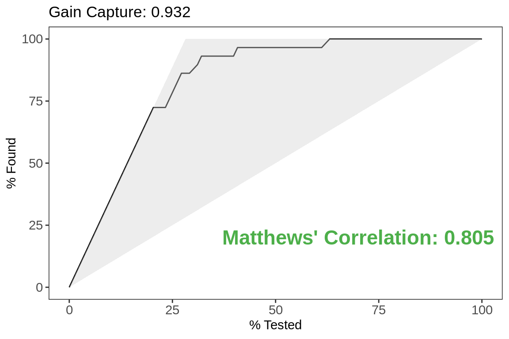
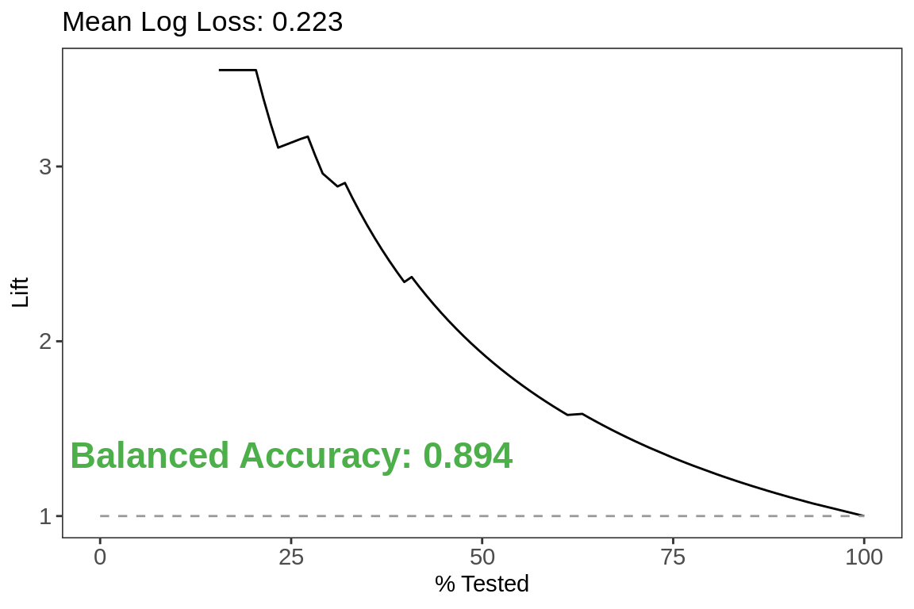
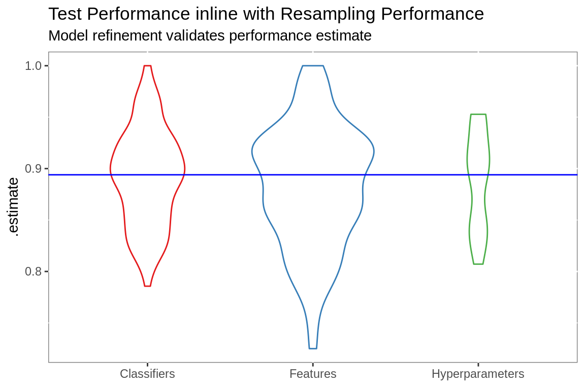

Lead Conversion Model
Predicting leads likely to convert
object <- "Lead"
object.label <- paste0(object, "s")
# selection metric ----
metric <- metric.table %>%
filter(.metric == "bal_accuracy")
#start clock
start.time <- proc.time()
api.date <- today()
api.month <- as.character(month(api.date,
label = T, abbr = F))
api.day <- as.character(day(api.date))
api.time <- format(now(), "%H:%M %p %Z")
api.label <- paste(api.month, api.day, "at", api.time)
age.limit <- api.date %m-% years(2)
# soql api call ---------
obj.soql <- paste0(
"SELECT Id,
Title,
Email,
LeadSource,
Product_Service_Interest__c,
pi__campaign__c,
pi__score__c,
pi__first_touch_url__c,
pi__first_activity__c,
pi__last_activity__c,
CreatedDate,
LastModifiedDate,
LastActivityDate,
Status,
IsConverted,
ConvertedDate FROM Lead WHERE
Status != 'Existing Opportunity'"
) %>%
str_remove_all(., "\\\n") %>%
str_squish(.)
# excute api call
obj <- sf_query(obj.soql, object_name = object, api_type="Bulk 1.0")
# readr import errors
prbs <- attributes(obj)$problems
# fix errors
obj.conv <- obj[prbs$row, "Id"] %>%
bind_cols(prbs %>%
select(ConvertedDate = actual)) %>%
mutate(ConvertedDate = as_date(ConvertedDate)) %>%
as_tibble()
obj <- obj %>%
select(-ConvertedDate) %>%
left_join(obj.conv) %>%
mutate_if(is.POSIXct, as_date) %>%
mutate(Closed = !is.na(ConvertedDate) |
IsConverted == T |
Status %in% c("Qualified",
"Unqualified"),
Closed = ifelse(Status == "Open", F, Closed),
LastActivity =
case_when(!is.na(pi__last_activity__c) &
!is.na(LastActivityDate) &
pi__last_activity__c >
LastActivityDate ~ as_date(pi__last_activity__c),
!is.na(pi__last_activity__c) &
!is.na(LastActivityDate) &
pi__last_activity__c <
LastActivityDate ~ as_date(LastActivityDate),
!is.na(pi__last_activity__c) &
is.na(LastActivityDate) ~
as_date(pi__last_activity__c),
is.na(pi__last_activity__c) &
!is.na(LastActivityDate) ~
as_date(LastActivityDate),
is.na(pi__last_activity__c) &
is.na(LastActivityDate) ~
as_date(LastModifiedDate),
TRUE ~ as_date(LastActivityDate))) %>%
filter(LastActivity >= as_date(age.limit))
# feature engineering ----
# create labels
# create day variables
# other indicator variables
# extract email suffix
# aggregate levels for variables with 30+ levels
# via string detection
objs <- obj %>%
separate(Email,
c("drop", "domain"),
sep = "@",
remove = T) %>%
select(-drop) %>%
mutate(label = case_when(Closed == T &
IsConverted == T |
Status == "Qualified" ~
"Yes",
Closed == T &
IsConverted == F |
Status == "Unqualified" ~
"No"),
label = factor(label, levels = c("Yes", "No")),
PublicDomain = ifelse(domain %in% public.domains,
"Yes", "No"),
PublicDomain = factor(PublicDomain),
KnownURL =
ifelse(is.na(pi__first_touch_url__c), "No",
"Yes"),
KnownURL = factor(KnownURL),
EmailSuffix =
as.character(str_extract_all(domain,
"[.][A-z]{2,6}$")),
EmailSuffix =str_remove_all(EmailSuffix, "[.]"),
Age =
ifelse(!is.na(ConvertedDate),
as.numeric(ConvertedDate -
CreatedDate),
as.numeric(lubridate::as_date(Sys.Date()) -
CreatedDate)),
Age = ifelse(Age == 0, 1, Age),
ActivityDays =
ifelse(!is.na(ConvertedDate),
as.numeric(ConvertedDate -
LastActivity),
as.numeric(lubridate::as_date(Sys.Date()) -
LastActivity))) %>%
select(-domain)
# training/testing records ----
known.objs <- objs %>%
filter(!is.na(label))%>%
select(Id,
Age,
ActivityDays,
pi__score__c,
pi__campaign__c,
EmailSuffix,
Product_Service_Interest__c,
LeadSource,
Title,
PublicDomain,
KnownURL,
label)
# initial split ----
# create holdout set
initial.split <- rsample::initial_split(known.objs,
prop = 3/4,
strata = "label")
# cut training records
training <- training(initial.split)
limit.date <- paste(as.character(month(age.limit,
label = T,
abbr = F)),
year(age.limit))The workflow proposed by Kuhn and Johnson (2019) was implemented using tidymodel tools.
Model development is inside a two-layer nested resampling scheme. This leads to a more robust model, enhanced confidence in development decisions and increased computation time. To generate a single scoring run over 1,000 models will be fit to more than 100 distinct datasets.
Using resampling to create multiple distinct training sets prevents model overfitting. To reduce the risk of overfitting predictors features are engineered during each resample. Any specious relationship between the predictors and outcome is unlikely throughout the resamples. Measuring performance across a series of distinct resamples reduces the likelihood that performance estimates will be overly optimistic.
The performance measure used to select each model parameter was Balanced Accuracy, computed as average of sensitivity and specificity. Bayesian model analysis, as outlined by Benavoli et al (2017), was used to validate each selection.
# variable significance -----------
# fit an intercept only logistic model
# use add1 to fit single variable models for other predictors
# select predictors that significantly improve deviance
var_sig <- function(df, vrs){
.scp <- as.formula(paste("~", paste(vrs, collapse = "+")))
df <- mutate(df, label = ifelse(label == "Yes", 1, 0))
mdl <- glm(label ~ 1,
family = binomial(link = "logit"),
data = df)
add <- add1(mdl,
scope = .scp) %>%
rownames_to_column("variable") %>%
mutate(dev.imp = mdl$deviance - Deviance,
ptst = 1-pchisq(dev.imp, 1)) %>%
filter(variable %in% vrs) %>%
filter(ptst < 0.01)
out <- add$variable
rm(mdl, df, .scp, add)
gc()
return(out)
}
# variable relevance ----
# compare variable importance to importance achievable at random
# via random forest
# select variables deemed relevant
var_rel <- function(df, form){
bor <- Boruta(form, df) %>%
TentativeRoughFix()
out <- getSelectedAttributes(bor)
return(out)
}
# variable importance ----
# use caret to calculate variable importance
# select important variables
var_imp <- function(df, .form){
mdl <- caret::train(.form, data = df, method = "glmnet")
imp <- caret::varImp(mdl)
imp <- imp$importance %>%
rownames_to_column("vrs") %>%
filter(Overall > 0)
out <- imp$vrs
return(out)
}
# combined variable importance ----
final_imp <- function(df, vrs){
form <- as_formula(vrs)
.scp <- as.formula(paste("~", paste(vrs, collapse = "+")))
var.imp <- caret::train(form, data = df, method = "glmnet") %>%
caret::varImp()
var.imp <- var.imp$importance %>%
rownames_to_column("variable") %>%
dplyr::select(variable, value = Overall)
var.rel <- Boruta(form, df) %>%
TentativeRoughFix()
var.rel <- var.rel$ImpHistory %>%
as_tibble() %>%
gather(variable, value) %>%
mutate(value = ifelse(!is.finite(value), 0, value)) %>%
dplyr::group_by(variable) %>%
dplyr::summarize(value = mean(value)) %>%
ungroup() %>%
dplyr::filter(is.finite(value)) %>%
dplyr::filter(variable %in% vrs)
dat <- mutate(df, label = ifelse(label == "Yes", 1, 0))
mdl <- glm(label ~ 1,
family = binomial(link = "logit"),
data = dat)
add <- add1(mdl,
scope = .scp) %>%
rownames_to_column("variable") %>%
dplyr::mutate(dev.imp = mdl$deviance - Deviance,
ptst = 1-pchisq(dev.imp, 1)) %>%
dplyr::filter(variable %in% vrs) %>%
dplyr::select(variable, value = dev.imp)
out <- var.rel %>%
dplyr::mutate(selector = "Relevance") %>%
bind_rows(var.imp %>%
dplyr::mutate(selector = "Importance")) %>%
bind_rows(add %>%
dplyr::mutate(selector = "Significance")) %>%
group_by(selector) %>%
dplyr::mutate(value = value / max(value)) %>%
ungroup()
return(out)
}
# level aggregation ----
# most freq token
token_freq <- function(x){
tkns <- tokenizers::tokenize_word_stems(x,
stopwords =
c("of", "the", "and"))
tkn.freq <- table(unlist(tkns))
for(i in seq_along(tkns)){
tkns[[i]] <- names(which.max(tkn.freq[tkns[[i]]]))[[1]]
tkns[[i]] <- ifelse(tkns[[i]] == "NA", NA, tkns[[i]])
tkns
}
return(unlist(tkns))
}
# bayes ttest ----
# workhorse ----
correlatedBayesianTtest <- function(diff_a_b,rho,rope_min,rope_max){
if (rope_max < rope_min){
stop("rope_max should be larger than rope_min")
}
delta <- mean(diff_a_b)
n <- length(diff_a_b)
df <- n-1
stdX <- sd(diff_a_b)
sp <- sd(diff_a_b)*sqrt(1/n + rho/(1-rho))
p.left <- pt((rope_min - delta)/sp, df)
p.rope <- pt((rope_max - delta)/sp, df)-p.left
results <- list('left'=p.left,'rope'=p.rope,
'right'=1-p.left-p.rope)
return (results)
}
# prep ------
# by creating ab list
pair_cross <- function(df, .grp){
crss <- as_tibble(list("a" = df[[.grp]],
"b" = c(df[[.grp]][2:nrow(df)], NA))) %>%
filter(!is.na(b))
return(crss)
}
# compute differences ----
# and apply bayesian ttest
corr_bayes_test <- function(x,
df,
flds,
best,
.ropemin = -0.01,
.ropemax = 0.01){
out <- correlatedBayesianTtest(df[[best]] - df[[x]],
rho = flds,
rope_min = .ropemin,
rope_max = .ropemax)
return(out)
}
# execute ----
# for entire ab list and label results
bayes_ttest <- function(df.rank, .grp, df.summary, .flds){
crs <- pair_cross(df.rank, .grp)
a.b <- vector("list", nrow(crs))
for(i in 1:nrow(crs)){
a.b[[i]] <- corr_bayes_test(x = crs[[i,1]],
df = df.summary,
flds = 1/.flds,
best = crs[[i,2]])
names(a.b[[i]]) <- c(paste(crs[[i,1]],
">",
crs[[i,2]]),
paste(crs[[i,1]],
"=",
crs[[i,2]]),
paste(crs[[i,1]],
"<",
crs[[i,2]]))
a.b[[i]] <- a.b[[i]] %>%
as_tibble()
a.b[[i]]
}
return(a.b)
}
ab_test <- function(df.rank, df.test, .met){
if(.met == "mn_log_loss"){
out <- bayes_ttest(df.rank, "model", df.test,
.flds = length(unique(df.test$id))) %>%
map(., ~gather(., key, prob)) %>%
bind_rows(.id = "pair") %>%
mutate(equal.better = str_detect(key, "<"),
equal.worse = str_detect(key, ">")) %>%
group_by(pair) %>%
mutate(rw = row_number()) %>%
arrange(desc(rw), .by_group = T) %>%
group_by(pair, equal.better) %>%
mutate(combined = sum(prob)) %>%
group_by(pair, equal.worse) %>%
mutate(less = sum(prob)) %>%
ungroup()%>%
separate(key, c("better", "than"),
sep = " > | = | <", remove = F) %>%
mutate(better = str_trim(better, "both"),
than = str_trim(than, "both"))
return(out)
}else{
out <- bayes_ttest(df.rank, "model", df.test,
.flds = length(unique(df.test$id))) %>%
map(., ~gather(., key, prob)) %>%
bind_rows(.id = "pair") %>%
mutate(equal.better = str_detect(key, "=|>"),
equal.worse = str_detect(key, "=|<")) %>%
group_by(pair, equal.better) %>%
mutate(combined = sum(prob)) %>%
group_by(pair, equal.worse) %>%
mutate(less = sum(prob)) %>%
ungroup()%>%
separate(key, c("better", "than"),
sep = " > | = | <", remove = F) %>%
mutate(better = str_trim(better, "both"),
than = str_trim(than, "both"))
return(out)
}
}
# helper functions ----
# quiet fits ----
# don't print model details to console
q_f <- quietly(fit)
# intersect 3 vectors
triple_u <- function(x, y, z){
p1 <- as_tibble(list("vrs" = c(x,y,z))) %>%
unique()
out <- unique(p1$vrs)
return(out)
}
# union 3 vectors
triple_inter <- function(x, y, z){
p1 <- as_tibble(list("vrs" = c(x,y,z))) %>%
mutate(n = 1) %>%
group_by(vrs) %>%
filter(n() == 3)
out <- unique(p1$vrs)
return(out)
}
# prep folds ----
fold_recipe <- function(df, .rec){
out <- df %>%
mutate(analysis = map(splits, as.data.frame, data = "analysis"),
assessment = map(splits, as.data.frame, data = "assessment"),
prep = map(analysis, df_prep, rec = .rec),
analysis = map2(prep, analysis, bake),
assessment = map2(prep, assessment, bake),
form = map(prep, formula))
return(out)
}
# parsnip formula fitter ----
# reorder arguments to use on list columns
prs_form <- function(df, .form, prs){
out <- q_f(prs, .form, df)[["result"]]
return(out)
}
# recipe prepper ----
# reorder arguments to use on list columns
df_prep <- function(df, rec){
out <- prep(rec, df, strings_as_factors = F)
return(out)
}
# predictor ----
# reorder arguments to use on list columns
df_pred <- function(df, .fit, .type){
out <- predict(.fit, new_data = df, type = .type)
}
# formula creator ----
# create formula from vector of variables
as_formula <- function(.vrs, y.var = "label"){
out <- as.formula(paste(y.var, "~",
paste(.vrs, collapse = "+")))
return(out)
}
# pads for unnesting
df_pad <- function(df, x){
out <- df[x,]
}
# plot lines
plot.grid <- as_tibble(list("grid" = seq(1.5, 4.5, 1)))
zero.rw <- plot.grid[0,]
prose_title <- function(a.b, .type, .same = zero.rw){
if(a.b[1,]$prob > 0.7){
paste0("The probability ",
a.b[1, ]$better,
" is the best ",
.type,
" is ",
round(a.b[1, ]$prob,2)*100,
"%")
}else{
if(nrow(.same) == 1){
paste0(a.b[1, ]$than,
" selects ",
round((.same[1,]$than.vrs/.same[1,]$better.vrs) *100),
"% fewer features than ",
a.b[1, ]$better,
"\nand the probability it performs as well or better is ",
round(.same$less[1],2)*100,
"%")
}else{
paste0("The probability ",
a.b[1, ]$better,
" performs as well or better than ",
a.b[1, ]$than,
" is ",
round(a.b$combined[1],2)*100,
"%")
}
}
}
# plot folds ----
plot_folds <- function(df, .tlt, .sbtlt){
p <- df %>%
filter(.metric == metric$.metric) %>%
ggplot(aes(id2,
.estimate,
group = fct_rev(fct_reorder(model,
.estimate,
.fun = mean)),
color = fct_rev(fct_reorder(model,
.estimate,
.fun = mean))))+
stat_summary(fun.y = "max",
geom = "point",
shape = 95,
size = 2.5,
stroke = 4,
position = position_dodge(width = 0.9))+
stat_summary(fun.y = "min",
geom = "point",
shape = 95,
size = 4,
stroke = 4,
position = position_dodge(width = 0.9))+
stat_summary(fun.data = "median_hilow",
geom = "linerange",
size = .75,
alpha = 1/2,
linetype = 3,
position = position_dodge(width = 0.9))+
geom_vline(data = plot.grid, aes(xintercept = grid),
color = "grey50",
size = 0.25)+
stat_summary(fun.data = "mean_cl_boot",
geom = "line",
position = position_dodge(width = 0.9))+
stat_summary(fun.data = "mean_cl_boot",
geom = "point",
position = position_dodge(width = 0.9))+
guides(color = guide_legend(title = NULL))+
scale_color_brewer(palette = "Set2")+
labs(title = paste(.tlt),
subtitle = paste(.sbtlt),
x = NULL,
y = paste(metric$metric))+
theme(panel.background =
element_rect(fill = NA,
colour = "grey50"),
legend.key = element_rect(fill = "white"),
legend.key.size = unit(2, "lines"))
print(p)
}
# compute summary metrics
tune_summary <- function(df){
out <- df %>%
conf_mat(truth = label, .pred_class) %>%
mutate(summary = map(conf_mat, summary)) %>%
ungroup() %>%
select(id, id2, model, summary) %>%
unnest() %>%
bind_rows(folds.pred %>%
mn_log_loss(truth = label, .pred_Yes)) %>%
mutate(comp = metric_benchmark(.metric, .estimate))
return(out)
}
# rank based on selected metric
tune_rank <- function(df, .met){
out <- df %>%
filter(.metric == .met) %>%
group_by(model, .metric) %>%
summarize(.estimate = mean(.estimate)) %>%
group_by(.metric) %>%
mutate(rank = case_when(.metric ==
"mn_log_loss" ~ dense_rank(.estimate),
TRUE ~ dense_rank(desc(.estimate)))) %>%
ungroup() %>%
arrange(rank)
return(out)
}
# prepare for bayes ttest
tune_test <- function(df, .met){
out <- df %>%
filter(.metric == .met) %>%
select(id, id2, model, .metric, .estimate) %>%
spread(model, .estimate, fill = 0) %>%
arrange(.metric, id, id2)
return(out)
}Nested Resamples
# resamples ----
# external ----
# create external folds
folds.external <- rsample::vfold_cv(training,
v = 5,
repeats = 1,
strata = "label")
# extract df of external folds
analysis.external <- folds.external$splits %>%
map(., as.data.frame, data = "analysis")
assess.external <- folds.external$splits %>%
map(., as.data.frame, data = "assessment")
# internal ----
# create internal folds
folds.internal.mdl <- rsample::vfold_cv(analysis.external[[1]],
v = 5,
repeats = 10,
strata = "label")
folds.internal.fs <- rsample::vfold_cv(analysis.external[[2]],
v = 5,
repeats = 10,
strata = "label")
folds.internal.tn <- rsample::vfold_cv(analysis.external[[3]],
v = 5,
repeats = 1,
strata = "label")
# records per fold
fold.size <- tibble::tribble(
~"Set", ~"Size",
"Known", nrow(known.objs),
"Train", nrow(training),
"Holdout", nrow(rsample::testing(initial.split)),
"Analysis", map(folds.internal.mdl$splits,
as.data.frame,
data = "analysis") %>%
map_dbl(., nrow) %>%
mean() %>%
round(),
"Assessment", map(folds.internal.mdl$splits,
as.data.frame,
data = "assessment") %>%
map_dbl(., nrow) %>%
mean() %>%
round()
) %>%
mutate(Ratio = (Size / max(Size)) * 2.25)Initial Split The 416 records with known responses were split into a 313 record training set and a 103 record holdout set.
External Resamples The training records were resampled to create 5 cross-validation folds each containing
250.4 analysis records and 62.6 assessment records.
Internal Resamples The analysis records from each external fold were repeatedly resampled, creating 10 repeats of 5 fold cross-validation sets, each containing 200 analysis and 50 assessment records.
Final Model The selected parameters were used to fit the final model to all 313 training records and then validated against the 103 record holdout set.
A simplified diagram of the resampling scheme is below.
# draw resampling diagram
DiagrammeR::grViz("digraph nested_resamples
{
# a 'graph' statement
graph [overlap = true, fontsize = 10]
# several 'node' statements
node [shape = pentagon,
fontname = Helvetica,
label = 'Known Records',
fixedsize = true,
height = 2.25,
width = 2.25]
Known
node [shape = square,
color = DarkBlue,
fill = SeaShell,
label = 'Train',
fixedsize = true,
height = 1.7,
width = 1.7]
Train
node [shape = house,
fontcolor = DarkSlateGray,
fill = LightCyan,
label = 'Test',
fizedsize = true,
height = 0.55,
width = 0.55]
Test
node [shape = plaintext,
fontcolor = DarkBlue,
label = 'External']
External1
node [shape = plaintext,
fontcolor = DarkBlue,
label = 'Resample']
ExternalA
node [shape = rectangle,
fontcolor = SteelBlue,
color = SteelBlue,
label = 'Classifier\nSelection',
fixedsize = true,
height = 0.6,
width = 1.1]
Fold1
node [shape = rectangle,
fontcolor = SlateBlue,
color = SlateBlue,
label = 'Feature\nSelection',
fixedsize = true,
height = 0.6,
width = 1.1]
FoldA
node [shape = plaintext,
fontcolor = SteelBlue,
color = SteelBlue,
label = 'Internal Resamples']
Internal1
node [shape = plaintext,
fontcolor = SlateBlue,
color = SlateBlue,
label = 'Internal Resamples']
InternalA
node [shape = square,
fontcolor = SteelBlue,
color = SteelBlue,
fill = SeaShell,
label = 'Analysis',
fixedsize = true,
height = 1,
width = 1]
train1; train2
node [shape = square,
fontcolor = SlateBlue,
color = SlateBlue,
fill = SeaShell,
label = 'Analysis',
fixedsize = true,
height = 1,
width = 1]
trainA; trainB
node [shape = house,
fontcolor = DarkSlateGray,
color = SteelBlue,
fill = LightCyan,
label = 'Test',
fixedsize = true,
height = 0.4,
width = 0.4]
test1; test2
node [shape = house,
fontcolor = DarkSlateGray,
color = SlateBlue,
fill = LightCyan,
label = 'Test',
fixedsize = true,
height = 0.4,
width = 0.4]
testA; testB
subgraph {
rank = same; Test; Train;
}
subgraph {
rank = same; External1; ExternalA;
}
subgraph {
rank = same; Fold1; FoldA;
}
subgraph {
rank = same; Internal1; InternalA;
}
subgraph {
rank = same; train1; test1; train2; test2;
trainA; testA, trainB; testB;
}
# several 'edge' statements
Known->Test [arrowhead = none]
Known->Train
Train->Test[arrowhead = none]
Train->{External1 ExternalA}[arrowhead = none]
External1->Fold1
ExternalA->FoldA
Fold1->Internal1 [color = SteelBlue, arrowhead = none]
Internal1->{train1 train2} [color = SteelBlue]
Internal1->{test1 test2}[color = SteelBlue,arrowhead = none]
FoldA->InternalA [color = SlateBlue, arrowhead = none]
InternalA->{trainA trainB} [color = SlateBlue]
InternalA->{testA testB}[color = SlateBlue,arrowhead = none]
train1->test1 [color = SteelBlue, arrowhead = none]
train2->test2 [color = SteelBlue, arrowhead = none]
trainA->testA [color = SlateBlue, arrowhead = none]
trainB->testB [color = SlateBlue, arrowhead = none]
}
")Parameters
vrs.numeric <- colnames(training)[sapply(training, is.numeric)]
vrs.levels <- setdiff(colnames(training)[sapply(training, is.character)],
c("Id", "label"))
# recipe ----------
# impute
# reduce levels
# create polynomials, interactions & dummy variables
rec.all <- recipe(label ~ ., data = training) %>%
update_role(Id, new_role = "id.var") %>%
step_modeimpute(all_nominal(),
-all_outcomes(),
-Id) %>%
step_mutate(Title = token_freq(Title)) %>%
step_mutate(Product_Service_Interest__c =
token_freq(Product_Service_Interest__c)) %>%
step_mutate(LeadSource = token_freq(LeadSource)) %>%
step_other(all_nominal(),
threshold = 0.05,
other = "Other",
-all_outcomes(),
-Id) %>%
step_knnimpute(all_numeric(),
neighbors = 3,
-all_outcomes()) %>%
step_dummy(all_nominal(),
-all_outcomes(), -Id) %>%
step_interact(terms = ~
one_of(vrs.numeric):contains("_")) %>%
step_poly(one_of(vrs.numeric),
options = list(degree = 4),
-all_outcomes(),
-Id) %>%
step_lincomb(all_predictors(),
-all_outcomes(), -Id) %>%
step_zv(all_predictors(),
-all_outcomes(), -Id) %>%
step_nzv(all_predictors(),
-all_outcomes(), -Id) %>%
step_corr(all_predictors(),
threshold = 0.7,
method = "pearson",
-all_outcomes(), -Id) %>%
step_center(all_predictors(),
-all_outcomes(), -Id) %>%
step_scale(all_predictors(),
-all_outcomes(), -Id)
# parsnip model setup ------------
# rf specification
prs.rf <- rand_forest(mode = "classification",
mtry = .preds(),
trees = 2000) %>%
set_engine("ranger",
importance = "impurity",
probability = TRUE)
# svm specification
prs.svm <- svm_rbf(mode = "classification") %>%
set_engine("kernlab",
kernel = "rbfdot",
prob.model = T)
# xgb specification
prs.xgb <- boost_tree(mode = "classification") %>%
set_engine("xgboost",
prob.model = T)
# list of parsnip model specs
models <- list("RF" = prs.rf,
"SVM" = prs.svm,
"XGB" = prs.xgb)Features
The following steps were applied individually to each internal resample:
- The most frequent value was used to impute missing categorical variables
- Categorical responses were aggragated based on word stem frequency and rare responses were grouped into an ‘other’ category
- Categorical variables were contrast coded into numeric predictors
- Nearest neighbor was used to impute missing numeric variables
- Two-way interactions were created between dummy categorical predictors and numeric predictors
- Fourth degree polynomial predictors were created from the numeric variables
- Filters were applied to remove predictors: - with no variance
- with sparse or unbalanced responses
- that were highly correlated
- with multicollinearity
- Predictors were centered and scaled
Tuning
Classifier
3 classifiers under consideration.
# resample analysis ----
# apply recipe to analysis set of each fold individually
# add columns with analysis and assessment data to split
# prep analysis and assessment sets
folds.internal <- fold_recipe(folds.internal.mdl, .rec = rec.all) %>%
select(-splits)
# add formula for each fold
# fit each model to analysis set of each fold individually
# generate predictions for assessment set
folds.internal <- folds.internal %>%
mutate(RF = map2(analysis, form, prs_form,
prs = models[["RF"]]),
RF = map2(RF, assessment, predict, type = "prob"),
SVM = map2(analysis, form, prs_form,
prs = models[["SVM"]]),
SVM = map2(SVM, assessment, predict, type = "prob"),
XGB = map2(analysis, form, prs_form,
prs = models[["XGB"]]),
XGB = map2(XGB, assessment, predict, type = "prob")) %>%
mutate(truth = map(assessment, ~select(., Id, label))) %>%
select(id, id2, truth, RF, SVM, XGB) %>%
gather(model, preds, -c(id, id2, truth))
# to unnest list columns, df list-elements need equal rows
# get rows to pad by list element
pads <- map_dbl(folds.internal$truth, nrow)
pads <- max(pads) - pads
# pad df
pad.df <- as_tibble(list("Id" = "0"))
# list of df to pad truth column
pads.id <- map(pads, df_pad, df = pad.df)
# list of df to pad prediction columns
pad.df <- as_tibble(list(".pred_Yes" = 0))
pads.pd <- map(pads, df_pad, df = pad.df)
# evenup rows
# gather and unnest
# add naive class
# drop padding
# drop models that fail to predict both outcomes
folds.pred <- folds.internal %>%
mutate(truth = map2(truth, pads.id, bind_rows),
preds = map2(preds, pads.pd, bind_rows)) %>%
unnest() %>%
mutate(.pred_class = ifelse(.pred_Yes > .pred_No, "Yes",
"No"),
.pred_class = factor(.pred_class, levels = c("Yes",
"No"))) %>%
filter(Id != "0") %>%
filter(!is.na(.pred_class)) %>%
group_by(id, id2, model) %>%
mutate(classes = n_distinct(.pred_class)) %>%
ungroup() %>%
filter(classes == 2) %>%
group_by(model) %>%
mutate(folds = max(row_number())) %>%
ungroup() %>%
group_by(id, id2, model)
# calculate performance metrics
classifier.summary <- tune_summary(folds.pred)
# rank classifiers
class.rank <- tune_rank(classifier.summary, .met = metric$.metric)
# prep for a/b tests
class.test <- tune_test(classifier.summary, .met = metric$.metric)
# bayes ttest
class.ab <- ab_test(class.rank, class.test, .met = metric$.metric) %>%
left_join(model.labels %>%
select(better = model,
b = long)) %>%
left_join(model.labels %>%
select(than = model,
w = long))
# selected classifier
classifier <- class.rank[class.rank$rank == 1, ]$model
# plot titles
class.title <- paste0(model.labels[model.labels$model ==
classifier,]$long,
" averaged ",
ifelse(metric$.metric == "mn_log_loss",
round(class.rank[class.rank$rank == 1,
]$.estimate, 3),
round(class.rank[class.rank$rank == 1,
]$.estimate, 3) *100),
"% ",
str_to_lower(metric$metric))
class.subtitle <- prose_title(class.ab, .type = "classifier")
# model specs
classifier.spec <- models[[classifier]]
plot_folds(classifier.summary, class.title, class.subtitle)
Feature Selection
Xtreme Gradient Boosting model was fit to 6 different subsets of features.
# this chunk takes a while
# split folds
# prep recipe on analysis set for each fold
folds.internal <- fold_recipe(folds.internal.fs, .rec = rec.all) %>%
select(-form, -splits)
# bake analysis and assessment sets
# run feature selection methods
# make long
folds.internal <- folds.internal %>%
mutate(All = map(analysis, colnames),
All = map(All, setdiff, c("Id", "label")),
Importance = map2(analysis, map(prep, formula), var_imp),
Relevance = map2(analysis, map(prep, formula), var_rel),
Significance = map2(analysis, All, var_sig),
Exclusive = pmap(list(Importance, Relevance, Significance),
triple_inter),
Inclusive = pmap(list(Importance, Relevance, Significance),
triple_u)) %>%
select(-prep) %>%
gather(fs, forms, -c(id, id2, analysis, assessment))
# fit models and predict assessment sets
folds.internal <- folds.internal %>%
mutate(vrs = map(forms, length)) %>%
filter(vrs > 0) %>%
mutate(forms = map(forms, as_formula),
fits = map2(analysis, forms, prs_form,
prs = classifier.spec),
preds = map2(fits, assessment, predict,
type = "prob"))
# average vars selected by each fs
folds.vrs <- folds.internal %>%
select(fs, vrs) %>%
unnest() %>%
group_by(fs) %>%
summarize(vrs = round(mean(vrs)))
# to unnest list columns, df list-elements need equal rows
# get rows to pad by list element
pads <- map_dbl(folds.internal$preds, nrow)
pads <- max(pads) - pads
# pad df
pad.df <- as_tibble(list("Id" = "0"))
# list of df to pad truth column
pads.id <- map(pads, df_pad, df = pad.df)
# list of df to pad prediction columns
pad.df <- as_tibble(list(".pred_Yes" = 0))
pads.pd <- map(pads, df_pad, df = pad.df)
# evenup rows
# gather and unnest
# add naive class
# drop padding
folds.pred <- folds.internal %>%
mutate(truth = map(assessment, ~select(., Id, label))) %>%
select(id, id2, model = fs, truth, preds) %>%
mutate(truth = map2(truth, pads.id, bind_rows),
preds = map2(preds, pads.pd, bind_rows)) %>%
unnest() %>%
mutate(.pred_class = ifelse(.pred_Yes > .pred_No, "Yes",
"No"),
.pred_class = factor(.pred_class, levels = c("Yes",
"No"))) %>%
filter(Id != "0") %>%
filter(!is.na(.pred_class)) %>%
group_by(id, id2, model) %>%
mutate(classes = n_distinct(.pred_class)) %>%
ungroup() %>%
filter(classes == 2) %>%
group_by(model) %>%
mutate(folds = max(row_number())) %>%
ungroup() %>%
filter(folds > (max(folds) * 0.7)) %>%
group_by(id, id2, model)
# calculate performance metrics
fs.summary <- tune_summary(folds.pred)
# rank
fs.rank <- tune_rank(fs.summary, .met = metric$.metric)
# prep for a/b test
fs.test <- tune_test(fs.summary, .met = metric$.metric)
# ttest
fs.ab <- ab_test(fs.rank, fs.test, .met = metric$.metric)
# if second feature selection method performs similar to first
# and has less variables
# select second fs
fs.same <- fs.ab %>%
filter(pair == 1) %>%
left_join(folds.vrs %>%
select(than = fs,
than.vrs = vrs)) %>%
left_join(folds.vrs %>%
select(better = fs,
better.vrs = vrs)) %>%
mutate(smaller = than.vrs <better.vrs) %>%
arrange(desc(prob)) %>%
mutate(.metric = metric$.metric) %>%
filter(str_detect(key, "=") &
smaller == T )
# plot subtitle
fs.subtitle <- prose_title(fs.ab,
.same = fs.same,
.type = "feature selector")
# selected fs
fs <- ifelse(nrow(fs.same) == 1,
fs.same$than,
fs.rank[fs.rank$rank == 1, ]$model)
# plot title
fs.title <- paste0("Average ",
str_to_lower(metric$metric),
" of ",
ifelse(metric$.metric == "mn_log_loss",
round(fs.rank[fs.rank$rank == 1,
]$.estimate, 3),
round(fs.rank[fs.rank$rank == 1,
]$.estimate, 3) *100),
"%")
plot_folds(fs.summary, fs.title, fs.subtitle)
Hyperparameters
# prep for hyperparameter tests
folds.internal <- fold_recipe(folds.internal.tn, .rec = rec.all) %>%
rename(Formula = form) %>%
mutate(vrs = map(analysis, ~select(., -Id, -label)),
vrs = map(vrs, colnames))
# apply selected fs
folds.internal <- if(fs == "Importance"){
folds.internal %>%
select(-splits) %>%
mutate(vrs = map2(analysis, Formula, var_imp),
form = map(vrs, as_formula)) %>%
select(-Formula)
}else{
if(fs == "Inclusive"){
folds.internal %>%
select(-splits) %>%
mutate(Importance = map2(analysis, Formula, var_imp),
Relevance = map2(analysis, Formula, var_rel),
Significance = map2(analysis, vrs, var_sig),
vrs = pmap(list(Importance,
Relevance,
Significance),
triple_u),
form = map(vrs, as_formula)) %>%
select(-Formula)
}else{
if(fs == "Exclusive"){
folds.internal %>%
select(-splits) %>%
mutate(Importance = map2(analysis, Formula, var_imp),
Relevance = map2(analysis, Formula, var_rel),
Significance = map2(analysis, vrs, var_sig),
vrs = pmap(list(Importance,
Relevance,
Significance),
triple_inter),
form = map(vrs, as_formula))
}else{
if(fs == "Relevance"){
folds.internal %>%
select(-splits) %>%
mutate(vrs = map2(analysis, Formula, var_rel),
form = map(vrs, as_formula)) %>%
select(-Formula)
}else{
if(fs == "Significance"){
folds.internal %>%
select(-splits, -Formula) %>%
mutate(vrs = map2(analysis, vrs, var_sig),
form = map(vrs, as_formula))
}else{
folds.internal %>%
mutate(form = Formula) %>%
select(-splits, -Formula)
}
}
}
}
}
# number of predictors
tn.cls <- map_dbl(folds.internal$vrs, length)
# tuning parameter grid by model
tune.grid <- list(
"RF" = grid_random(mtry %>%
range_set(c(floor(sqrt(min(tn.cls))),
min(tn.cls))),
min_n %>%
range_set(c(1,4)),
size = 9),
"SVM" = grid_random(cost,
rbf_sigma,
size = 9),
"XGB" = grid_random(tree_depth,
learn_rate %>%
range_set(c(0.1, 0.5)),
size = 9)
)
# clean model specs to merge with tuning parameters
raw.mdls <- list(
"RF" = rand_forest(mode = "classification",
mtry = varying(),
min_n = varying(),
trees = 2000) %>%
set_engine("ranger",
importance = "impurity",
probability = TRUE) %>%
merge(tune.grid[["RF"]]),
"SVM" = svm_rbf(mode = "classification",
rbf_sigma = varying(),
cost = varying()) %>%
set_engine("kernlab",
kernel = "rbfdot",
prob.model = T) %>%
merge(tune.grid[["SVM"]]),
"XGB" = boost_tree(mode = "classification",
mtry = .preds(),
learn_rate = varying(),
tree_depth = varying()) %>%
set_engine("xgboost",
prob.model = T) %>%
merge(tune.grid[["XGB"]])
)
# selected model with tuning grid
# add on original model spec
prs.mdls <- c(raw.mdls[[classifier]],
list(models[[classifier]]))
# fit to resamples, looping over tuning grid
tunes <- vector("list", length(prs.mdls))
for(i in(seq_along(prs.mdls))){
tunes[[i]] <- folds.internal %>%
mutate(fit = map2(analysis, form, prs_form,
prs = prs.mdls[[i]]),
fit = map2(fit, assessment, predict, type = "prob"),
truth = map(assessment, ~select(., Id, label))) %>%
select(starts_with("id"), truth, fit)
tunes
}
# bind rows of output
tunes <- bind_rows(tunes, .id = "model")
# to unnest list columns, df list-elements need equal rows
# get rows to pad by list element
pads <- map_dbl(tunes$truth, nrow)
pads <- max(pads) - pads
# pad df
pad.df <- as_tibble(list("Id" = "0"))
# list of df to pad truth column
pads.id <- map(pads, df_pad, df = pad.df)
# list of df to pad prediction columns
pad.df <- as_tibble(list(".pred_Yes" = 0))
pads.pd <- map(pads, df_pad, df = pad.df)
# apply hard class
tunes <- tunes %>%
mutate(truth = map2(truth, pads.id, bind_rows),
fit = map2(fit, pads.pd, bind_rows)) %>%
unnest() %>%
mutate(.pred_class = ifelse(.pred_Yes > .pred_No, "Yes", "No"),
.pred_class = factor(.pred_class,
levels = c("Yes", "No"))) %>%
filter(Id != "0")
# summary metrics
tunes.summary <- tunes %>%
group_by(model, id) %>%
mutate(classes = n_distinct(.pred_class)) %>%
ungroup() %>%
filter(classes > 1) %>%
group_by(id, model) %>%
conf_mat(truth = label, .pred_class) %>%
mutate(summary = map(conf_mat, summary)) %>%
select(starts_with("id"), model, summary) %>%
unnest()%>%
bind_rows(tunes %>%
group_by(model, id) %>%
mn_log_loss(truth = label, .pred_Yes)) %>%
mutate(comp = metric_benchmark(.metric, .estimate))
# rank tunes
tunes.rank <- tune_rank(tunes.summary, .met = metric$.metric)
# prep for a/b test
tunes.test <- tunes.summary %>%
select(starts_with("id"), model, .metric, .estimate) %>%
filter(model %in% tunes.rank$model) %>%
filter(.metric == metric$.metric) %>%
spread(model, .estimate, fill = 0) %>%
arrange(id)
# ttest
tunes.ab <- ab_test(tunes.rank, tunes.test, .met = metric$.metric)
# selected tune
hyperparameters <-as.numeric(tunes.rank[tunes.rank$rank ==
1,]$model)[1]
tune.prose <- paste0(length(prs.mdls),
" candidate hyperparameter combinations were",
" considered.\n",
"The probability the selected hyperparameters outperform",
" the other options considered: ",
round(tunes.ab[1,]$combined,2)*100,
"%")10 candidate hyperparameter combinations were considered. The probability the selected hyperparameters outperform the other options considered: 91%.
Model
# prep entire training set
prep.resample <- prep(rec.all, training, strings_as_factors = F)
# bake training set
train <- bake(prep.resample, training)
# bake test set
test <- bake(prep.resample, testing(initial.split))
# bake scoring set
score <- bake(prep.resample, filter(objs, is.na(label)))
# get all predictors
train.all <- summary(prep.resample) %>%
filter(role == "predictor") %>%
select(variable) %>%
unlist()
# apply fs
train.vrs <- if(fs == "Importance"){
out <- var_imp(train, formula(prep.resample))
}else{
if(fs == "Relevance"){
out <- var_rel(train, formula(prep.resample))
}else{
if(fs == "Significance"){
out <- var_sig(train, train.all)
}else{
if(fs == "Exclusive"){
imp <- var_imp(train, formula(prep.resample))
br <- var_rel(train, formula(prep.resample))
sg <- var_sig(train, train.all)
out <- intersect(intersect(imp, br), intersect(br, sg))
}else{
if(fs == "Inclusive"){
imp <- var_imp(train, formula(prep.resample))
br <- var_rel(train, formula(prep.resample))
sg <- var_sig(train, train.all)
out <- union(imp, union(br, sg))
}else{
train.all
}
}
}
}
}
# create formula
train.form <- as.formula(paste("label", "~",
paste(train.vrs, collapse = "+")))
# fit model
fits <- q_f(prs.mdls[[hyperparameters]],
train.form,
train)[["result"]]
# generate test predictions
test.preds <- test %>%
nest(-c(Id, label)) %>%
mutate(probs = map(data, df_pred, .fit = fits,
.type = "prob")) %>%
select(Id, label, probs) %>%
unnest() %>%
mutate(.pred_class = ifelse(.pred_Yes > .pred_No, "Yes", "No"),
.pred_class = factor(.pred_class,
levels = c("Yes", "No"))) %>%
mutate(Correct = ifelse(label == .pred_class, "Yes", "No"))
# generate new predictions
preds <- score %>%
nest(-c(Id, label)) %>%
mutate(probs = map(data, df_pred, .fit = fits, .type = "prob"),
classes = map(data, df_pred,
.fit = fits, .type = "class")) %>%
select(Id, label, probs) %>%
unnest() %>%
mutate(.pred_class = ifelse(.pred_Yes > .pred_No, "Yes", "No"),
.pred_class = factor(.pred_class,
levels = c("Yes", "No"))) %>%
mutate(Decile = floor(10 * (.pred_Yes / max(.pred_Yes))),
Decile = ifelse(Decile == 10, 9, Decile))
# summary metrics
test.metrics <- test.preds %>%
conf_mat(truth = label, .pred_class) %>%
summary() %>%
bind_rows(test.preds %>%
gain_capture(truth = label, .pred_Yes)) %>%
bind_rows(test.preds %>%
pr_auc(truth = label, .pred_Yes)) %>%
bind_rows(test.preds %>%
roc_auc(truth = label, .pred_Yes)) %>%
bind_rows(test.preds %>%
mn_log_loss(truth = label, .pred_Yes)) %>%
filter(!.metric %in% c("sens", "spec", "recall", "precision")) %>%
mutate(comp = metric_benchmark(.metric, .estimate),
.estimate = round(.estimate, 3)) %>%
inner_join(metric.table) %>%
mutate(good = case_when(comp < 0.95 ~ "No",
comp < 1.1 ~ "Yes",
comp >= 1.1 ~ "Great"))
vrs.prose <- ifelse(fs != "All",
paste(length(train.vrs),
"of",
length(train.all),
"predictors selected",
"by the",
fs,
"filter"),
paste(length(train.vrs),
"predictors"))Final Model: Xtreme Gradient Boosting using 28 of 45 predictors selected by the Relevance filter.
Accuracy
# plot accuracy by year
acc.yr <- test.preds %>%
left_join(objs %>%
select(Id, CreatedDate) %>%
mutate(YearCreated = lubridate::year(CreatedDate))) %>%
filter(YearCreated >= lubridate::year(lubridate::as_date(age.limit))) %>%
mutate(YearCreated = factor(YearCreated)) %>%
group_by(YearCreated, Correct) %>%
summarize(n = n()) %>%
group_by(YearCreated) %>%
mutate(total = sum(n)) %>%
ungroup() %>%
mutate(perc = n / total,
rate = ifelse(Correct == "No" & total > 1, "",
paste0(round(n / total, 2)*100, "%")),
clr = ifelse(total <= 3, "ble", "whte"),
nudge = ifelse(total <= 3, 1.5, -1.5))
acc.yr %>%
ggplot(aes(x = YearCreated, y = n))+
geom_col(aes(fill = fct_rev(Correct)),
color = "#FFFFFF")+
geom_text(aes(x = YearCreated,
y = total + nudge,
color = clr,
label = rate),
size = 5,
fontface = "bold",
show.legend = F)+
scale_fill_manual(values = c("Yes" = "#377EB8",
"No" = "#E41A1C"))+
scale_color_manual(values = c("whte" = "#FFFFFF",
"ble" = "#132B43"))+
guides(fill = guide_legend(title = "Correct"))+
labs(title = paste0("Overall Test Accuracy: ",
round(test.metrics[test.metrics$.metric ==
"accuracy",
]$.estimate, 2)*100,
"%"),
subtitle =
paste0("Accuracy for recent test records: ",
round(mean(filter(acc.yr, Correct == "Yes")$perc), 2) * 100,
"%"),
x = "Year Lead Created",
y = "Predictions")+
theme(panel.background =
element_rect(fill = "white",
colour = "grey50"))
Confusion Matrix
# plot confusion matrix
conf_mat(test.preds, label, .pred_class)[[1]] %>%
as_tibble() %>%
ggplot(aes(Prediction, Truth))+
geom_tile(aes(alpha = n,
fill = n),
show.legend = F,
color = "grey50")+
geom_text(aes(label = n,
color = n),
size = 8,
show.legend = F,
fontface = "bold")+
labs(title = paste("Confusion Matrix:",
nrow(test.preds[test.preds$Correct == "Yes",]),
"of",
nrow(test.preds),
"test records correctly classified"))+
scale_y_discrete(limits = c("No", "Yes"))+
scale_x_discrete(limits = c("Yes", "No"))+
scale_color_continuous(low = "#56B1F7", high = "#132B43")+
scale_fill_continuous(low = "#132B43", high = "#56B1F7")+
theme(panel.background =
element_rect(fill = "white",
colour = "grey50"),
axis.text = element_text(size = rel(1.2)))
Performance Curves
ROC Curve
# plot performance curves
test.preds %>%
roc_curve(truth = label, .pred_Yes) %>%
autoplot()+
geom_text(data = test.metrics %>%
filter(.metric == "j_index"),
aes(label = paste0(metric, ": ", .estimate),
color = good,
x = 0.65,
y = 0.2),
size = 6,
fontface = "bold",
show.legend = F)+
scale_color_manual(values = c("Yes" = "#377EB8",
"No" = "#E41A1C",
"Great" = "#4DAF4A"))+
labs(title = paste0("Area under curve",
": ",
test.metrics[test.metrics$.metric ==
"roc_auc",]$.estimate),
x = "1 - Sensitivity",
y = "Specificity")+
theme(panel.background =
element_rect(fill = "white",
colour = "grey50"),
axis.text = element_text(size = rel(1)),
panel.grid = element_blank(),
plot.subtitle = element_text(size = rel(1.2)))
Precision Recall Curve
test.preds %>%
pr_curve(truth = label, .pred_Yes) %>%
autoplot()+
geom_text(data = test.metrics %>%
filter(.metric == "f_meas"),
aes(label = paste0(metric, ": ", .estimate),
color = good,
x = 0.3,
y = 0.2),
size = 6,
fontface = "bold",
show.legend = F)+
scale_color_manual(values = c("Yes" = "#377EB8",
"No" = "#E41A1C",
"Great" = "#4DAF4A"))+
labs(title = paste0("Area under curve",
": ",
test.metrics[test.metrics$.metric ==
"pr_auc",]$.estimate),
x = "Recall",
y = "Precision")+
coord_fixed(ratio = 1, ylim = c(0,1))+
theme(panel.background =
element_rect(fill = "white",
colour = "grey50"),
axis.text = element_text(size = rel(1)),
panel.grid = element_blank(),
plot.subtitle = element_text(size = rel(1.2)))
Gain Curve
test.preds %>%
gain_curve(truth = label, .pred_Yes) %>%
autoplot()+
geom_text(data = test.metrics %>%
filter(.metric == "mcc"),
aes(label = paste0(metric, ": ", .estimate),
color = good,
x = 70,
y = 20),
size = 6,
fontface = "bold",
show.legend = F)+
scale_color_manual(values = c("Yes" = "#377EB8",
"No" = "#E41A1C",
"Great" = "#4DAF4A"))+
labs(title = paste0("Gain Capture",
": ",
test.metrics[test.metrics$.metric ==
"gain_capture",]$.estimate))+
theme(panel.background =
element_rect(fill = "white",
colour = "grey50"),
axis.text = element_text(size = rel(1)),
panel.grid = element_blank(),
plot.subtitle = element_text(size = rel(1.2)))
Lift
test.preds %>%
lift_curve(truth = label, .pred_Yes) %>%
autoplot()+
geom_text(data = test.metrics %>%
filter(.metric == "bal_accuracy"),
aes(label = paste0(metric, ": ", .estimate),
color = good,
x = 25,
y = 1.35),
size = 6,
fontface = "bold",
show.legend = F)+
scale_color_manual(values = c("Yes" = "#377EB8",
"No" = "#E41A1C",
"Great" = "#4DAF4A"))+
labs(title = paste0("Mean Log Loss",
": ",
test.metrics[test.metrics$.metric ==
"mn_log_loss",]$.estimate))+
theme(panel.background =
element_rect(fill = "white",
colour = "grey50"),
axis.text = element_text(size = rel(1)),
panel.grid = element_blank(),
plot.subtitle = element_text(size = rel(1.2)))
Training Improvement
# compute performance during parameter selection
train.summary <- tunes.summary %>%
rename(id2 = id) %>%
mutate(id = "Repeat01",
set = "Hyperparameters") %>%
bind_rows(fs.summary %>%
mutate(set = "Features")) %>%
bind_rows(classifier.summary %>%
mutate(set = "Classifiers")) %>%
left_join(test.metrics %>%
select(.metric, test = .estimate)) %>%
filter(!is.na(test)) %>%
mutate(better = ifelse(.metric == "mn_log_loss",
.estimate < test,
.estimate > test),
selected = model %in% c(classifier,
fs,
hyperparameters),
set = factor(set, levels = c("Classifiers",
"Features",
"Hyperparameters"),
ordered = T))
# did performance improve
train.imp <- train.summary %>%
group_by(set, selected, .metric) %>%
summarise(better = mean(better)) %>%
ungroup() %>%
spread(set, better) %>%
mutate(improve = Classifiers < Features |
Features < Hyperparameters,
Test = !Classifiers %in% c(0,1) |
!Features %in% c(0,1) |
!Hyperparameters %in% c(0,1)) %>%
filter(.metric == metric$.metric)
# plot
train.summary %>%
filter(.metric == metric$.metric) %>%
group_by(set) %>%
ggplot(aes(set,
.estimate,
color = set))+
geom_violin(scale = "count", show.legend = F)+
geom_hline(aes(yintercept = test.metrics[test.metrics$.metric ==
metric$.metric,]$.estimate),
color = "blue")+
scale_color_brewer(palette = "Set1")+
labs(title = ifelse(train.imp$Test == T,
paste("Test Performance inline",
"with Resampling Performance"),
paste("Test Performance overly optimistic")),
subtitle = ifelse(train.imp$improve == T,
paste("Model refinement validates",
"performance estimate"),
paste("Model did not improve")),
x = NULL)+
theme(panel.background = element_rect(fill = "white",
colour = "grey50"),
legend.key = element_rect(fill = "white"))
Scores
# compute lift by decile
mdl.lift.decile <- test.preds %>%
yardstick::lift_curve(truth = label, .pred_Yes) %>%
filter(!is.na(.lift))
top.deciles <- mdl.lift.decile %>%
mutate(.lift = round(.lift, 3)) %>%
filter(.lift == max(.lift))
decile.lift <-
paste0("Tesing indicates ",
round(unique(top.deciles$.lift)),
"x lift for the top ",
round(max(top.deciles$.percent_tested)),
"%")Tesing indicates 4x lift for the top 20%.
Range of Predicted Values
# bucket predictions by probability and plot
pred.dec <- preds %>%
mutate(Score = .pred_Yes / max(.pred_Yes),
Decile = round(Score, 1)) %>%
group_by(Decile) %>%
summarize(Score = mean(Score),
Records = n_distinct(Id)) %>%
ungroup() %>%
mutate(top = Decile > (1 - (max(top.deciles$.percent_tested) / 100)))
pred.dec %>%
ggplot(aes(Decile, Records, fill = Score))+
geom_col(width = 0.1,
color = "white")+
geom_text(data = filter(pred.dec,
top == T),
aes(label = Records,
color = Score),
fontface = "bold",
vjust = "inward")+
scale_x_continuous(breaks = seq(0, 1, 0.2),
labels = as.character(seq(0, 1, 0.2)))+
guides(fill = "none",
color = "none")+
labs(title = paste("Range of class probabilities for",
nrow(preds),
object.label),
subtitle = paste(sum(filter(pred.dec,
top == T)$Records),
object.label,
"w/ maximum lift"),
x = "Class Probability",
y = "Predictions")+
theme(panel.background =
element_rect(fill = "white",
colour = "grey50"))
R
Session Info
# session info
print(sessionInfo())## R version 3.6.0 (2019-04-26)
## Platform: x86_64-pc-linux-gnu (64-bit)
## Running under: Ubuntu 18.04.2 LTS
##
## Matrix products: default
## BLAS: /usr/lib/x86_64-linux-gnu/openblas/libblas.so.3
## LAPACK: /usr/lib/x86_64-linux-gnu/libopenblasp-r0.2.20.so
##
## locale:
## [1] LC_CTYPE=en_US.UTF-8 LC_NUMERIC=C
## [3] LC_TIME=en_US.UTF-8 LC_COLLATE=en_US.UTF-8
## [5] LC_MONETARY=en_US.UTF-8 LC_MESSAGES=en_US.UTF-8
## [7] LC_PAPER=en_US.UTF-8 LC_NAME=C
## [9] LC_ADDRESS=C LC_TELEPHONE=C
## [11] LC_MEASUREMENT=en_US.UTF-8 LC_IDENTIFICATION=C
##
## attached base packages:
## [1] stats graphics grDevices utils datasets methods base
##
## other attached packages:
## [1] caret_6.0-84 lattice_0.20-38 lubridate_1.7.4
## [4] yardstick_0.0.3 rsample_0.0.4 recipes_0.1.5
## [7] parsnip_0.0.2 infer_0.4.0.1 dials_0.0.2
## [10] scales_1.0.0 broom_0.5.2 tidymodels_0.0.2
## [13] forcats_0.4.0 stringr_1.4.0 dplyr_0.8.0.1
## [16] purrr_0.3.2 readr_1.3.1 tidyr_0.8.3
## [19] tibble_2.1.1 tidyverse_1.2.1 ggraph_1.0.2
## [22] ggplot2_3.1.1 tidygraph_1.1.2 Boruta_6.0.0
## [25] ranger_0.11.2 salesforcer_0.1.2
##
## loaded via a namespace (and not attached):
## [1] tidyselect_0.2.5 lme4_1.1-21 htmlwidgets_1.3
## [4] grid_3.6.0 pROC_1.14.0 munsell_0.5.0
## [7] codetools_0.2-16 xgboost_0.82.1 DT_0.5
## [10] miniUI_0.1.1.1 withr_2.1.2 colorspace_1.4-1
## [13] rgexf_0.15.3 knitr_1.22 rstudioapi_0.10
## [16] stats4_3.6.0 bayesplot_1.6.0 labeling_0.3
## [19] rstan_2.18.2 polyclip_1.10-0 farver_1.1.0
## [22] downloader_0.4 generics_0.0.2 ipred_0.9-9
## [25] xfun_0.6 R6_2.4.0 markdown_0.9
## [28] rstanarm_2.18.2 assertthat_0.2.1 promises_1.0.1
## [31] nnet_7.3-12 gtable_0.3.0 globals_0.12.4
## [34] processx_3.3.0 timeDate_3043.102 rlang_0.3.4
## [37] splines_3.6.0 lazyeval_0.2.2 ModelMetrics_1.2.2
## [40] acepack_1.4.1 brew_1.0-6 checkmate_1.9.1
## [43] inline_0.3.15 yaml_2.2.0 reshape2_1.4.3
## [46] modelr_0.1.4 tidytext_0.2.0 threejs_0.3.1
## [49] crosstalk_1.0.0 backports_1.1.4 httpuv_1.5.1
## [52] rsconnect_0.8.13 tokenizers_0.2.1 Hmisc_4.2-0
## [55] DiagrammeR_1.0.1 tools_3.6.0 lava_1.6.5
## [58] influenceR_0.1.0 ellipsis_0.1.0 RColorBrewer_1.1-2
## [61] ggridges_0.5.1 Rcpp_1.0.1 plyr_1.8.4
## [64] base64enc_0.1-3 visNetwork_2.0.6 ps_1.3.0
## [67] prettyunits_1.0.2 rpart_4.1-15 openssl_1.3
## [70] viridis_0.5.1 zoo_1.8-5 haven_2.1.0
## [73] ggrepel_0.8.0 cluster_2.0.8 magrittr_1.5
## [76] data.table_1.12.2 colourpicker_1.0 SnowballC_0.6.0
## [79] matrixStats_0.54.0 tidyposterior_0.0.2 hms_0.4.2
## [82] shinyjs_1.0 mime_0.6 evaluate_0.13
## [85] xtable_1.8-4 tidypredict_0.3.0 shinystan_2.5.0
## [88] XML_3.98-1.19 readxl_1.3.1 gridExtra_2.3
## [91] rstantools_1.5.1 compiler_3.6.0 crayon_1.3.4
## [94] minqa_1.2.4 StanHeaders_2.18.1 htmltools_0.3.6
## [97] later_0.8.0 Formula_1.2-3 tweenr_1.0.1
## [100] MASS_7.3-51.4 boot_1.3-22 Matrix_1.2-17
## [103] cli_1.1.0 parallel_3.6.0 gower_0.2.0
## [106] igraph_1.2.4.1 pkgconfig_2.0.2 foreign_0.8-71
## [109] foreach_1.4.4 xml2_1.2.0 dygraphs_1.1.1.6
## [112] prodlim_2018.04.18 rvest_0.3.3 janeaustenr_0.1.5
## [115] callr_3.2.0 digest_0.6.18 rmarkdown_1.12
## [118] cellranger_1.1.0 htmlTable_1.13.1 Rook_1.1-1
## [121] curl_3.3 kernlab_0.9-27 shiny_1.3.2
## [124] gtools_3.8.1 nloptr_1.2.1 nlme_3.1-139
## [127] jsonlite_1.6 viridisLite_0.3.0 askpass_1.1
## [130] pillar_1.3.1 loo_2.1.0 httr_1.4.0
## [133] pkgbuild_1.0.3 survival_2.44-1.1 glue_1.3.1
## [136] xts_0.11-2 iterators_1.0.10 shinythemes_1.1.2
## [139] glmnet_2.0-16 ggforce_0.2.2 class_7.3-15
## [142] stringi_1.4.3 latticeExtra_0.6-28 e1071_1.7-1